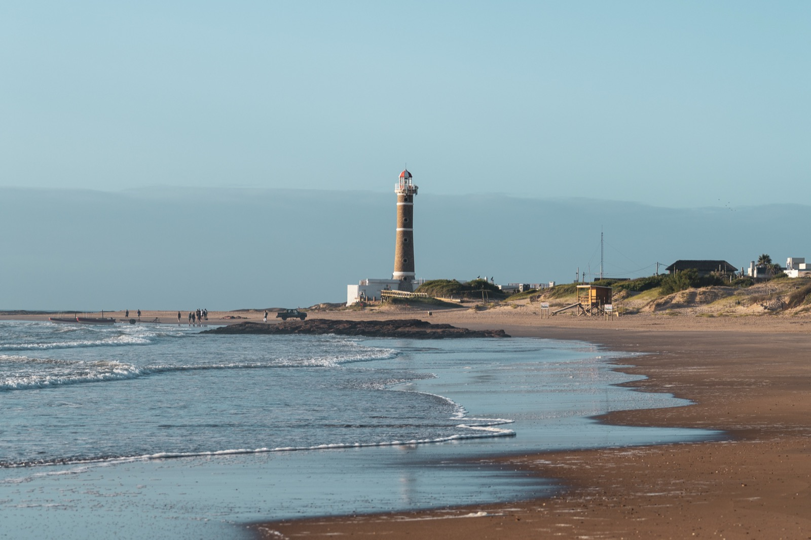
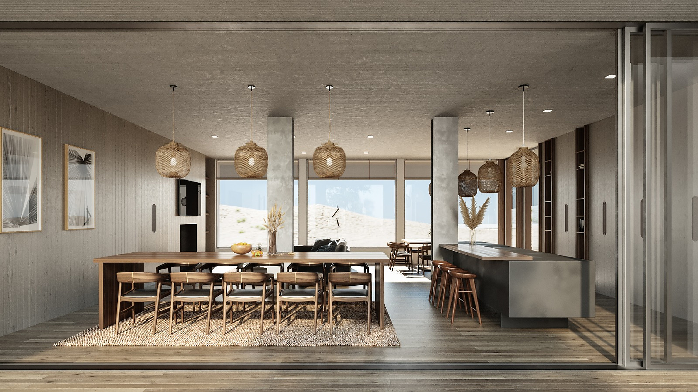
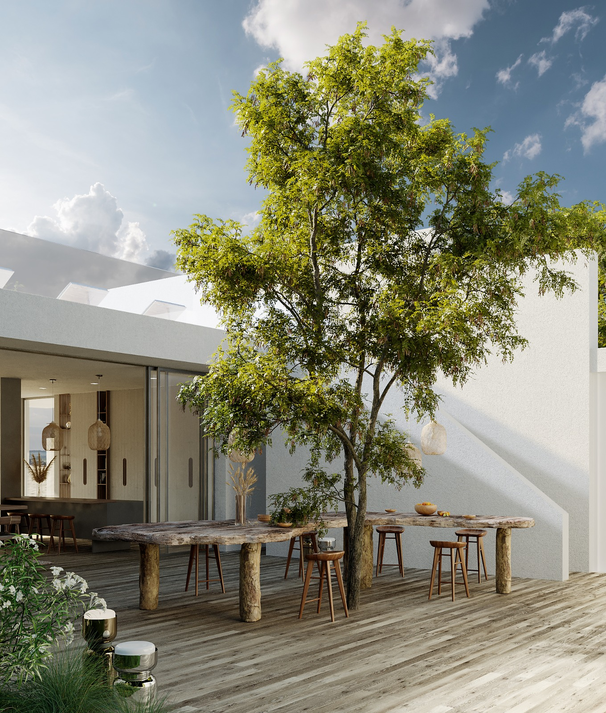
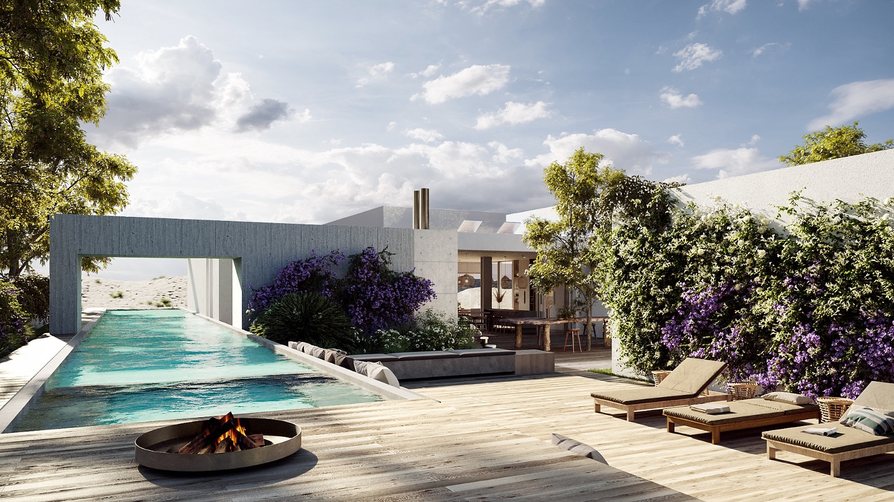
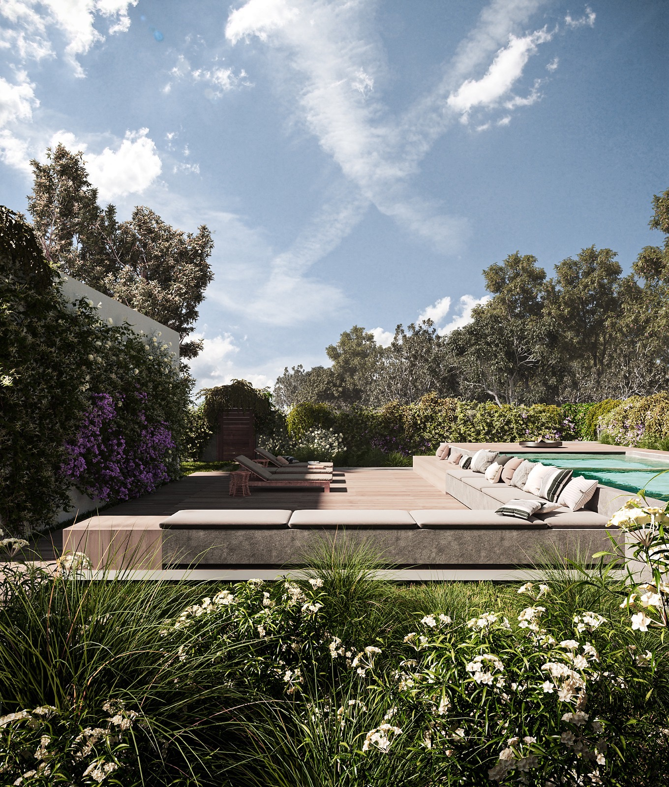
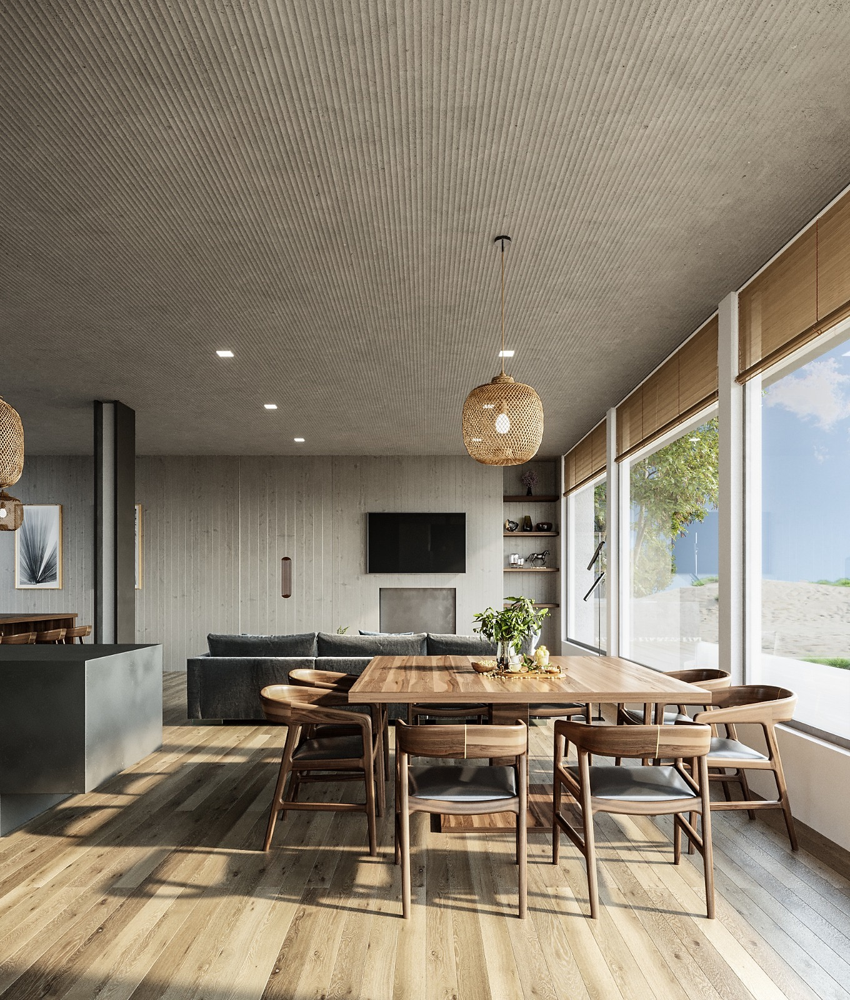

Casa de Playa Club de Mar
Entre las dunas y el océano
CLIMA /
Atlántico
BIOMA /
Pastizal litoral
TERRENO /
2.500 m²
ÁREA CUBIERTA /
120 m²
UBICACIÓN /
José Ignacio,
Uruguay


Este proyecto consiste en la transformación integral de una vivienda existente, originalmente ineficiente tanto en su desempeño ambiental como en su organización espacial. Los ambientes se percibían oscuros, calurosos y poco funcionales, sin una relación clara con el exterior.



La intervención reordena el programa y redefine la relación entre interior y paisaje. A través de nuevas aberturas, ajustes en su tamaño y posicionamiento, y una envolvente mejorada, la casa incorpora luz natural, favorece la ventilación cruzada y optimiza el confort térmico.
El diseño, la dimensión y el posicionamiento de las aberturas capturan estratégicamente el aire fresco del este y el noroeste.
El proyecto integra las concepciones de la arquitectura, el interiorismo y el paisajismo como un único
sistema. Los espacios exteriores se diseñan como una extensión de la vivienda, no solo desde lo espacial,
sino también como parte de su funcionamiento ambiental: aportan sombra, reducen la radiación sobre las
superficies más expuestas y colaboran en la regulación térmica del conjunto.
Cada decisión
proyectual fue evaluada mediante simulaciones, pruebas e iteraciones, buscando una intervención precisa que
mejore el desempeño energético y el confort.
La arquitectura se construye desde el detalle: composiciones equilibradas donde cada decisión es intencional y responde a objetivos funcionales y de desempeño energético.


El paisajismo aporta una estrategia de control solar, reduciendo la radiación sobre las superficies más expuestas.
La casa se reorganiza en torno a los ritmos cotidianos de quienes la habitan: la luz de la mañana y de la tarde, la ventilación natural, y una materialidad simple y serena que construye una atmósfera de calma.
Más que una renovación, se trata de una recalibración: una casa existente, repensada desde su uso, su clima y su relación con el entorno.

